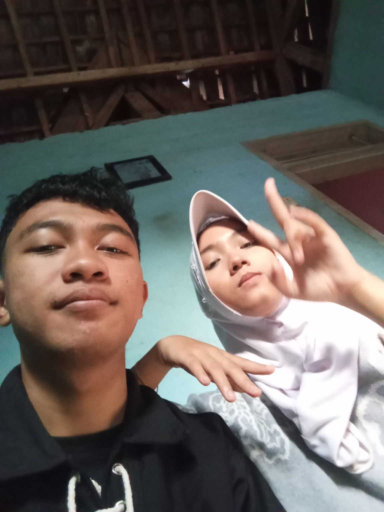

bab satu
Sebuah foto
Satu bingkai bisa membawa kembali suasana hari yang sudah lewat, lengkap dengan rasanya.
Sebelum masuk, tarik napas sebentar. Di dalam ada beberapa foto, sepotong cerita, dan lagu-lagu yang bisa kamu putar sendiri.
Bukan halaman besar dengan banyak kejutan. Cuma tempat sederhana untuk menyimpan foto, beberapa baris cerita, dan lagu yang bisa diganti kapan saja lewat music.js — supaya albumnya bisa terus bertambah seiring waktu.

Ditata seperti foto yang ditempel di papan gabus — sedikit miring, apa adanya. Klik salah satu untuk melihatnya lebih besar.
Halaman ini tidak mencoba menjelaskan semuanya sekaligus. Cukup menyimpan beberapa hal yang rasanya layak untuk dibaca ulang suatu hari nanti — dan mungkin, ditambah lagi ceritanya.
Satu bingkai bisa membawa kembali suasana hari yang sudah lewat, lengkap dengan rasanya.
Hari yang terasa biasa saja saat itu, sekarang jadi salah satu yang paling ingin diputar ulang.
Ada lagu yang cocok untuk suasana tertentu — daftarnya bisa diganti kapan saja lewat music.js, tanpa mengubah apa pun di halaman ini.
Dan bagian ini sengaja dibiarkan terbuka — supaya masih ada ruang untuk cerita yang belum ditulis.
"Ada kenangan yang tidak butuh alasan untuk terasa indah."— Aditiya, untuk Jannah
Gerbang di awal dibuat supaya masuk ke halaman ini terasa seperti membuka sesuatu, bukan sekadar memuat website.
Klik foto mana pun untuk melihatnya penuh layar, lalu tutup lagi tanpa berpindah halaman.
Daftar putar diatur dari music.js, jadi lagu bisa berganti tanpa perlu menyentuh tampilan.
Daftar di bawah mengikuti music.js — tidak perlu menulis ulang tautan di halaman ini.